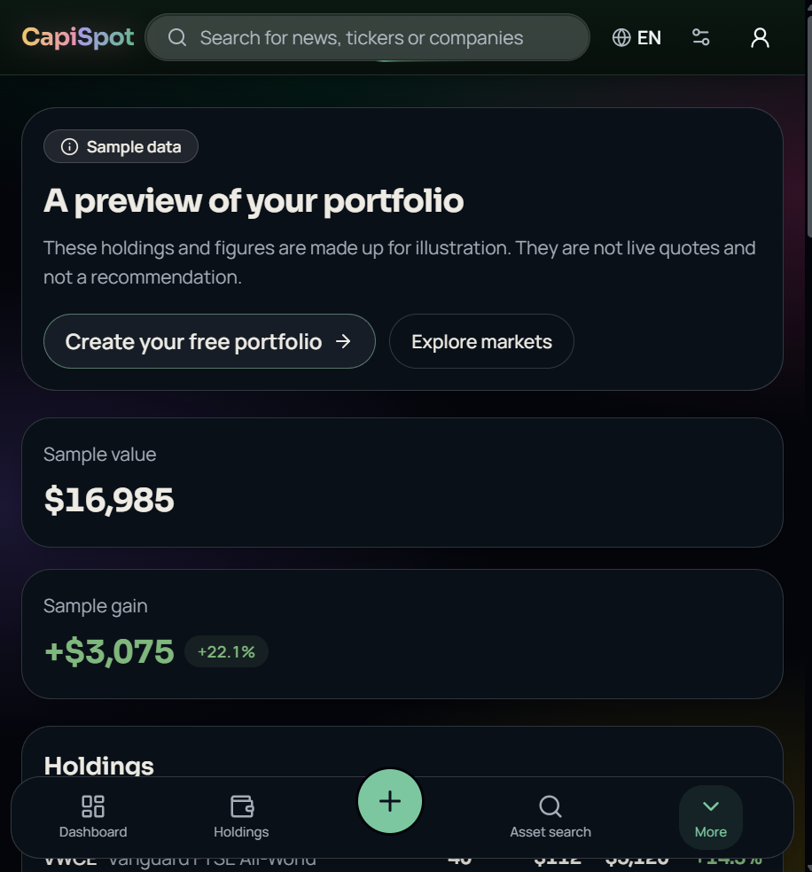

Positions, asset mix and market discovery in one place, with a clear sample to explore.
A clearer view of your investments
Your investments, clearly in view.
See how Capispot brings portfolio tracking, real market context and thoughtful Pro tools into one calm, connected experience.
See the product. Understand the difference.
A 24-second walkthrough · real Capispot screens

Your investments, clearly in view.
Capispot brings your investment activity together in one portfolio, with a calmer view of what you own.
- Stocks, ETFs, crypto, bonds, cash and real estate
- A portfolio view—not another market feed
- Explore a clearly labelled sample before signing up
The public portfolio shown here uses illustrative sample data.
0:00 / 0:36
Dated market history and cash-flow-aware returns. Gaps stay visible instead of guessed.
Research, concentration, risk and planning tools build on the free portfolio tracker.
A clearer picture starts with your portfolio.
Start with the core tracker for free. Explore Pro when you want more depth—not because you have to.
Screens are captured from Capispot's public site. Portfolio values and holdings shown in the sample are fictional and illustrative, not live quotes or a recommendation. Capispot is tracking and analytics software, not investment advice. Investing involves risk.